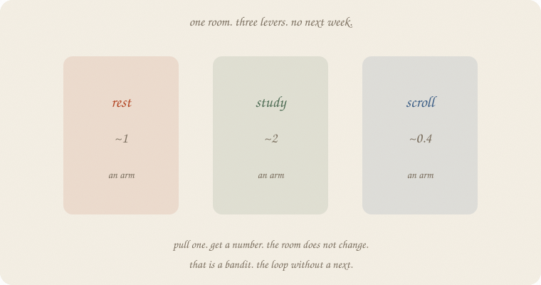
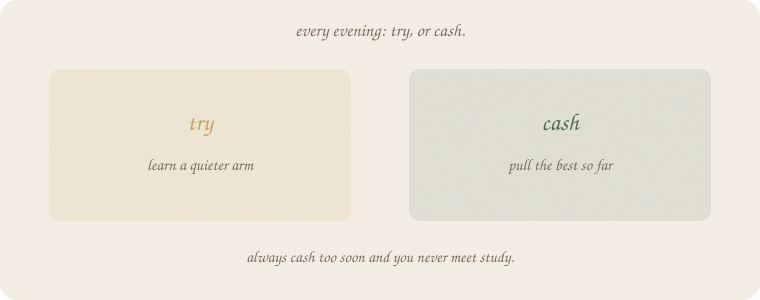
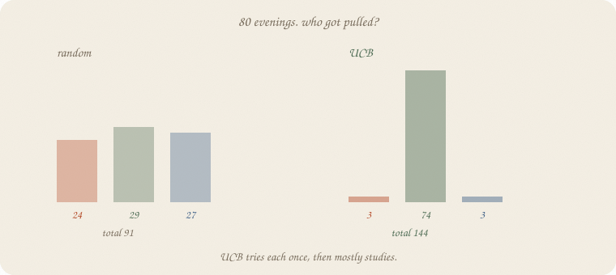
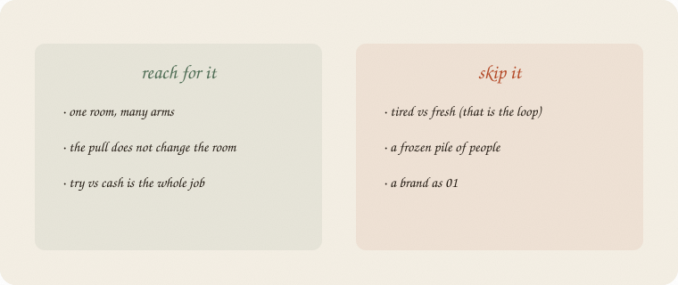

datazines · a sketchbook

Read 01 the loop first. Same exam world: an evening, not a cloud of eighty people. The loop had tired / fresh — the act changed next week. A bandit has no next. You are always in the same room. Only the lever you pull tonight changes.
Flip it like a notebook. One page = one idea. Done.
01 the loop: state, action, reward, next. Rest when tired so tomorrow you can study.
Some jobs have no tomorrow-as-a-new-room. Three evening habits. Every night you pick one. The house is still the house.
| arm | true mean (hidden) |
|---|---|
| rest | 1.0 |
| study | 2.0 |
| scroll | 0.4 |
You do not know those means. You pull. A noisy number comes back. People call each lever an arm. The machine is a bandit — one room, many arms.
If pulling study made you tired, you would need the loop. Here it does not. Skip next. Keep action and reward.
Every evening two urges:

Always cash too soon and you never meet study. Always try and you waste nights on scroll. The score is the sum of pulls. The miss versus always-study (if you had known) is regret.
You cannot start by cashing study. You have not met it yet.
True means 1.0 / 2.0 / 0.4, leftover 0.6. One pull of each first, then a rule.

| rule | total | rest / study / scroll |
|---|---|---|
| coin-flip | 91 | 24 / 29 / 27 |
| ε-greedy (15% try) | 141 | 3 / 72 / 5 |
| UCB | 144 | 3 / 74 / 3 |
Oracle if you knew study was best: 2 × 80 = 160. Random leaves 69 on the table. UCB leaves 16. It tried each arm once, then mostly studied. Last twelve pulls: study, study, … one peek at scroll, study again.
UCB = mean so far + a bonus for rarely pulled. Quiet arms look taller until you try them. Then the bonus shrinks. No ε to pick. The bonus is the try.
ε-greedy almost tied (141). Same story: try a little, cash a lot. UCB is the bonus spelled out.
If you keep only one thing:
no next. try or cash. the room stays.
Three arms. True means hidden. Random vs ε-greedy vs UCB. First three pulls: one of each.
import numpy as np
mu = np.array([1.0, 2.0, 0.4]) # rest, study, scroll
def pull(a, rng):
return mu[a] + rng.normal(0, 0.6)
def run(kind, n=80, seed=7, eps=0.15):
rng = np.random.default_rng(seed)
Q, N = np.zeros(3), np.zeros(3)
total, hist = 0.0, []
for t in range(1, n + 1):
if kind == "random":
a = int(rng.integers(0, 3))
elif kind == "eps":
if t <= 3:
a = t - 1
elif rng.random() < eps:
a = int(rng.integers(0, 3))
else:
a = int(np.argmax(Q))
elif kind == "ucb":
if t <= 3:
a = t - 1
else:
a = int(np.argmax(Q + np.sqrt(2 * np.log(t) / N)))
r = pull(a, rng)
N[a] += 1
Q[a] += (r - Q[a]) / N[a]
total += r
hist.append(a)
return total, Q, N, hist
print("n=80 seed=7")
for kind in ("random", "eps", "ucb"):
tot, Q, N, hist = run(kind)
print(f"{kind:8s} total {tot:6.1f} mean {tot/80:.2f} "
f"counts rest/study/scroll {N.astype(int).tolist()} "
f"Q {np.round(Q, 2).tolist()}")
tot, Q, N, hist = run("ucb")
print("UCB first 12", hist[:12])
print("UCB last 12", hist[-12:])
n=80 seed=7
random total 91.2 mean 1.14 counts rest/study/scroll [24, 29, 27] Q [1.02, 1.97, 0.36]
eps total 140.9 mean 1.76 counts rest/study/scroll [3, 72, 5] Q [1.15, 1.88, 0.47]
ucb total 143.7 mean 1.80 counts rest/study/scroll [3, 74, 3] Q [0.43, 1.92, 0.16]
UCB first 12 [0, 1, 2, 1, 1, 0, 1, 1, 1, 1, 1, 1]
UCB last 12 [1, 1, 1, 1, 2, 1, 1, 1, 1, 1, 1, 1]
Random shares nights almost equally — Q already sees study (~1.97) and still keeps pulling scroll. ε-greedy and UCB cash study. First twelve UCB: rest, study, scroll, then study. Last twelve: almost all study, one scroll peek. Q is the running mean of that arm — not the loop’s Q-table (no next). No sklearn estimator. The pulls are the lesson.
| word | meaning |
|---|---|
| arm | a lever in the one room |
| pull | pick an arm, get a noisy number |
| try | pull a quiet arm on purpose |
| cash | pull the best mean so far |
| regret | oracle-best minus you |
| UCB | mean + bonus for rarely pulled |
Also called (in a room):
| here | there |
|---|---|
| bandit | one-state RL |
| arm | action |
| ε-greedy | sometimes random |
| UCB | upper confidence bound |

Reach for it when
Skip it when
Pays you: the try/cash sentence. A rule that finds study without knowing it. Counts you can screenshot.
Costs you: no next-state (if the room does change, this notebook lies). Random tries cost nights. Regret is a writer’s stick, not a live number.
No next. Try or cash. Next: 03 Q — the loop’s table, named.
Flip it like a notebook. One page = one idea.